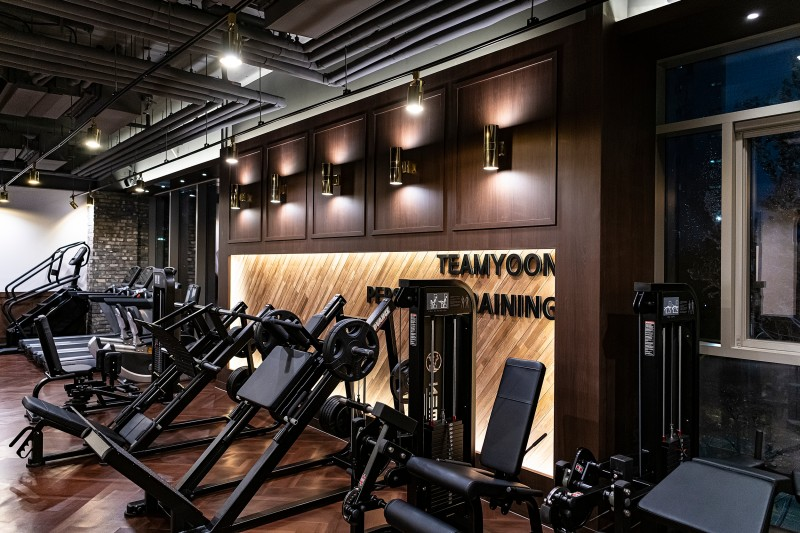

요즘 유튜브나 티비 등 여러가지 매체에서 헬스에 대한 이야기가 많이 나오면서 사람들이 헬스라는 문화에 대해서 많이들 익숙해지고 관심을 가지게 되고 있는데 하지만 막상 헬스장에 있는 운동기구를 보면 이름도 어색하고 사용법을 모르겠는 운동기구가 많이 존재하고 있다.
이렇게 우리는 헬스장에 처음 가게되면 익숙하지 않은 운동기구, 머신을 만나게 되는데 이때 어떤 운동을 하면 어떤 부위가 발달되는지, 그리고 올바른 운동법으로 안했을 경우 부상의 위험이 있기 때문에 올바른 운동자세 그리고 올바른 운동법에 대해서 설명을 하기 위한 페이지이다.
물론 이페이지를 보면 등 가슴 어깨 하체는 있지만 그 외의 팔의 이두, 삼두 등 어떤 부위는 나오지 않은 부분도 있다.
이러한 부위는 소개해주는 운동을 수행하다 보면 함께 트레이닝이 되는 부위가 많다보니 따로 소개를 안해드린 부분이 있다. 운동하시면서 추가적인 요소가 필요하다면 해당 헬스장의 트레이너분들 혹은 유튜브등의 인터넷을 통해 정보를 얻고 정확한 운동방법과 함께 운동하시기를 바란다.
